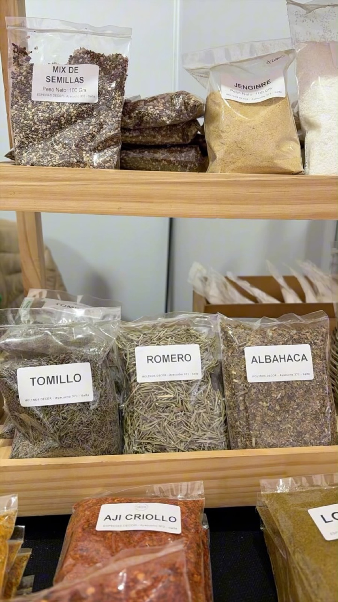
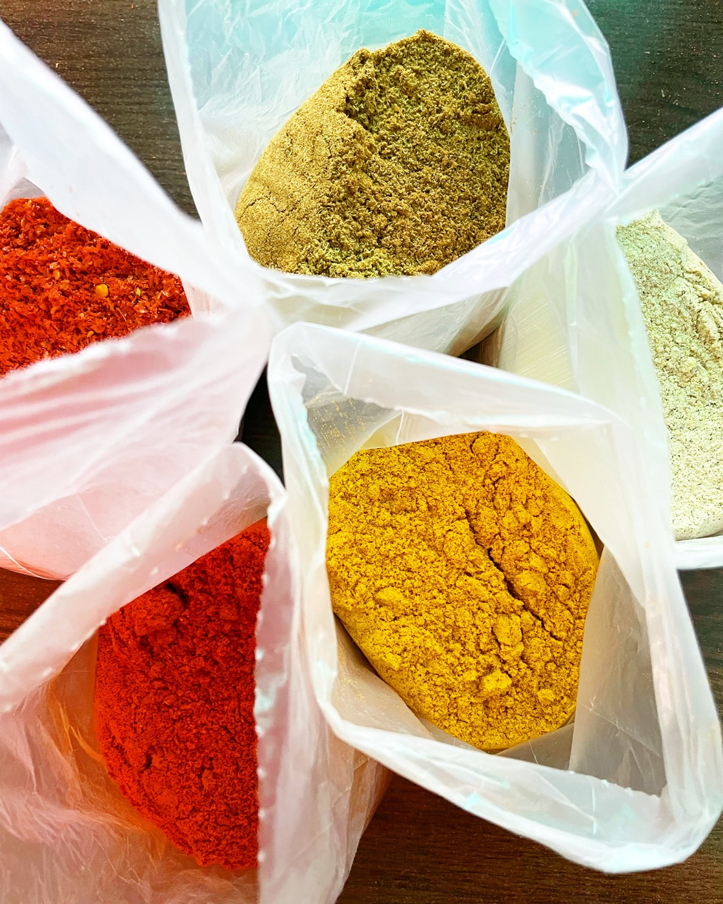

Producimos y molemos nuestras propias especias en Salta Capital. Abastecemos a mayoristas, carnicerías y comercios de todo el país — del gramo al kilo.
Desde 1992 producimos especias y condimentos en Salta, con un proceso que controlamos de punta a punta.
Controlamos todo el proceso de producción, del grano al molido final, sin intermediarios.
Más de 30 años en el rubro, con el mismo compromiso de calidad en cada partida.
Vendemos del gramo al kilo: para comercios que compran volumen y para consumo particular.


Condimentos molidos, frutos secos, semillas, hierbas y productos varios — todo con la misma calidad de siempre.
Trabajamos con comercios de todo el país, además de venta al público.
Volúmenes grandes, con distribución a todo el país.
Condimentos para chorizo, hamburguesa, milanesa y morcilla.
Venta minorista, del gramo al kilo, en Salta Capital.
Escribinos por WhatsApp o entrá directo al catálogo.